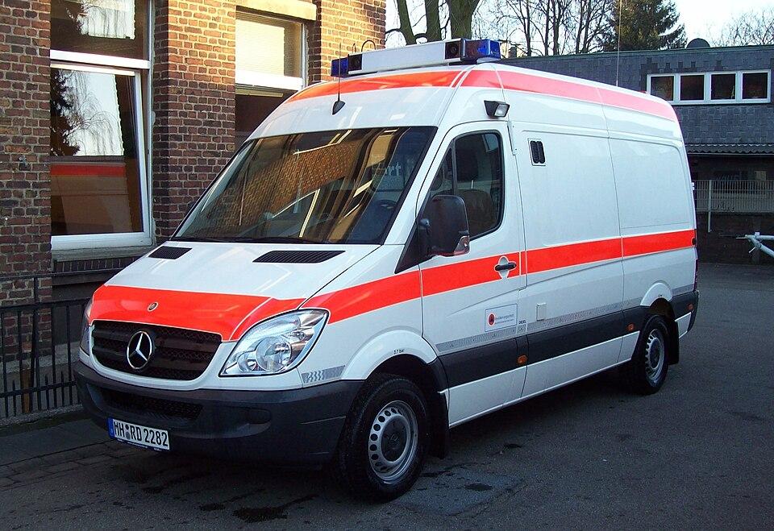
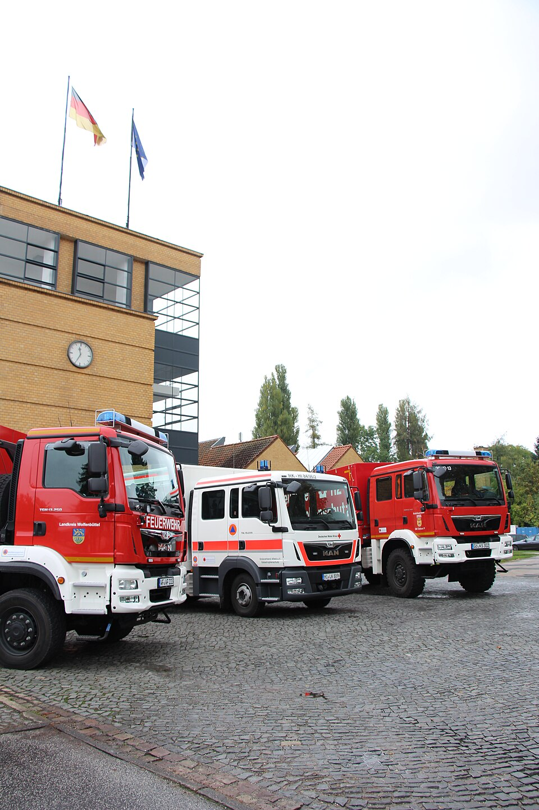

Einheiten-Erfassungsbogen für Bundeseinheiten des Zivilschutzes
Medizinische Task Force (MTF), Analytische Task Force CBRN (ATF), rescEU CBRN DECON Germany: Der Bund stellt für den Zivilschutz eigene Einheiten auf, die von Kommunen und Hilfsorganisationen mit Bundesausstattung betrieben werden. Dieser digitale Einheiten-Erfassungsbogen meldet ihre Teileinheiten mit Stärke, Führungskraft, Fahrzeugen und Sofortbedarf — am Bildschirm ausgefüllt, als PDF im gewohnten Papier-Layout gedruckt und per QR-Code ohne Internet an den Meldekopf übergeben.

Fünf Teileinheiten, eine Meldung je Bogen
Die MTF gliedert sich bundesweit einheitlich in Führungsgruppe, Behandlungsbereitschaft, Patiententransportgruppe, Dekontaminationszug für Verletzte und Logistikzug — mit fester Stärke und Fahrzeugausstattung nach dem Rahmenkonzept des Bundesamts für Bevölkerungsschutz und Katastrophenhilfe (BBK). Der Bogen kennt diese Gliederung: Je Teileinheit ein Bogen, zusammen ergeben sie die vollständige Meldung des MTF-Standorts. Fünf Beispielbögen mit der Original-Gliederung des Rahmenkonzepts liegen als Startpunkt bereit — in der App unter „Beispielbögen ansehen" in der Fußzeile.
Übergabe, wo kein Netz ist
Sammelraum am Standort, Bereitstellungsraum vor Ort, Behandlungsplatz im Feld: Die App arbeitet nach dem ersten Aufruf vollständig offline. Der QR-Code auf der letzten PDF-Seite trägt den kompletten Bogen in sich — die Führungsstelle scannt ihn und hat die Meldung im Gerät, ohne Verbindung zwischen den Geräten. Wie daraus die laufend summierte Übersicht über alle eingetroffenen Einheiten wird, zeigt Meldekopf digital.

Häufige Fragen zu den Bundeseinheiten
Welche Organisation wähle ich für die MTF?
Die MTF-Fahrzeuge sind Bundeseigentum, werden aber von einem örtlichen Träger besetzt — je nach Standort eine Feuerwehr oder eine Hilfsorganisation. Wähle im Bogen die Organisation deines Trägers; die Teileinheit trägst du als Einheitstyp frei ein (z. B. „Behandlungsbereitschaft (MTF)").
Wo bleiben die Daten der Einsatzkräfte?
Auf deinem Gerät. Es gibt keinen Server, keine Cloud und keine Konten; weitergegeben wird nur, was du selbst als PDF, Datei oder QR-Code übergibst — nachzulesen in der Datenschutzerklärung. Namen sind ohnehin optional: Für die Stärkemeldung genügen die Zahlen.
Funktioniert das mit Einheiten anderer Träger zusammen?
Ja. Ein Meldekopf sammelt Feuerwehr-, DRK-, THW- und weitere Hilfsorganisations-Einheiten in derselben Übersicht — der Bogen ist für alle BOS und Hilfsorganisationen derselbe, nur Begriffe und taktische Zeichen passen sich an.
Was kostet die App?
Nichts. Sie ist freie Software unter der EUPL-1.2, ohne Werbung und Bezahlschranke; der Quellcode liegt offen auf GitHub.